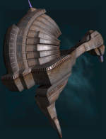
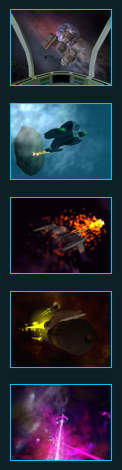

| About Jumpgate | About the Jumpgate Universe | Join Now |
| Jumpgate | FAQ | Reviews | Trial |
Jumpgate Overview

It was a time of light, it was a time of darkness. Civilization had prospered greatly within a balance that only peaceful coexistence among spacefaring societies could bring. Each of the known systems had something to offer the others, who were all eager to receive. The axes which had been ground for millennia by the four differing cultures had long been buried. Then, it happened - an event of religious armageddon for some, an event of impossible chaotic chance for others. Historians today call this the "Great Collapse". When the Great Collapse occurred, known space was plunged into a dark age. Commerce, travel, and communication among the civilizations utterly ceased. Planets shifted in their orbits, and stable stars went nova. The prosperous worlds and peaceful co-existence were gone as the civilizations struggled merely to survive, and make sense of what had happened. Eventually, among the Solrain, efforts began to reestablish the now-ancient technology of starflight. Communication was reestablished with other members of the former Pre-Collapse civilization, then finally travel. The joint efforts to restore their great common civilization became known as The Reconstruction Initiative (TRI). Since its inception, the work of TRI has brought unparalleled advancements in technology and innovative inventions to cope with new circumstances. But as TRI spacecraft have re-occupied space, they have learned that humanity is no longer alone among the stars. Now we face the implacable Conflux, marauders from another universe. With the opening of gates to the Conflux universe in Pulsar and Amananth sectors, new dangers have presented themselves, threatening to shake a distracted TRI to its knees. Trouble now riddles known space, from old rekindled conflicts between Hyperial and Quantar, to conflict within TRI itself. Political groups with their own agendas have placed the future of TRI in question, but still the Reconstruction moves forward. The Conflux wait in the wings, striking swiftly at any opportunity. Now more than ever, TRI needs help. Will we survive the Attack of the Conflux? Join us, and make a difference.

Jumpgate is an online-only, massively multiplayer space simulation in a persistent game universe. As the owner and pilot of a spacecraft, pilots acquire wealth and status by engaging in trade, mining, or combat with other TRI pilots and AI-controlled factions. Features include:
|